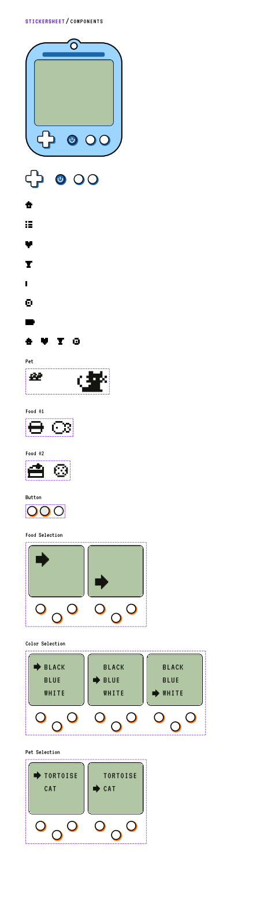
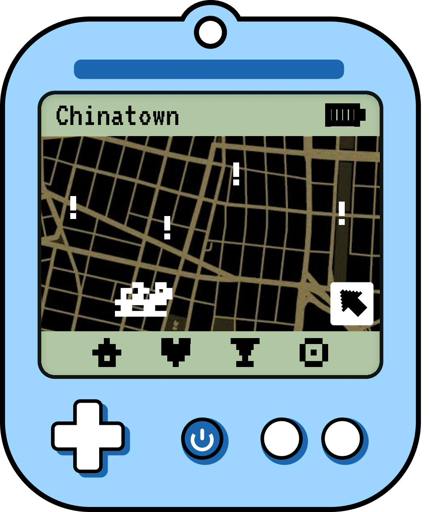
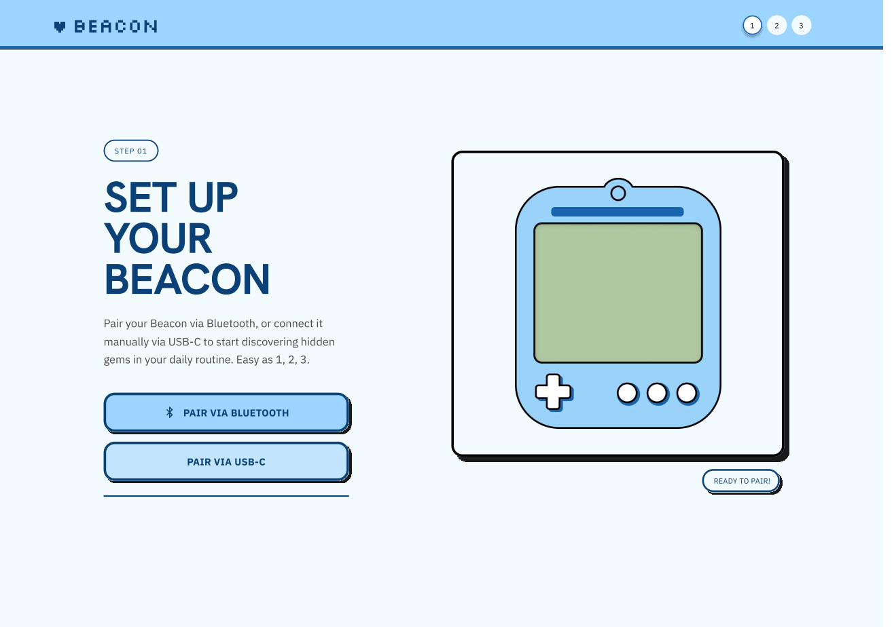
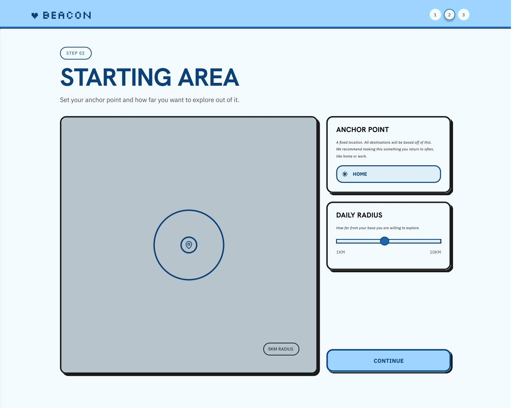
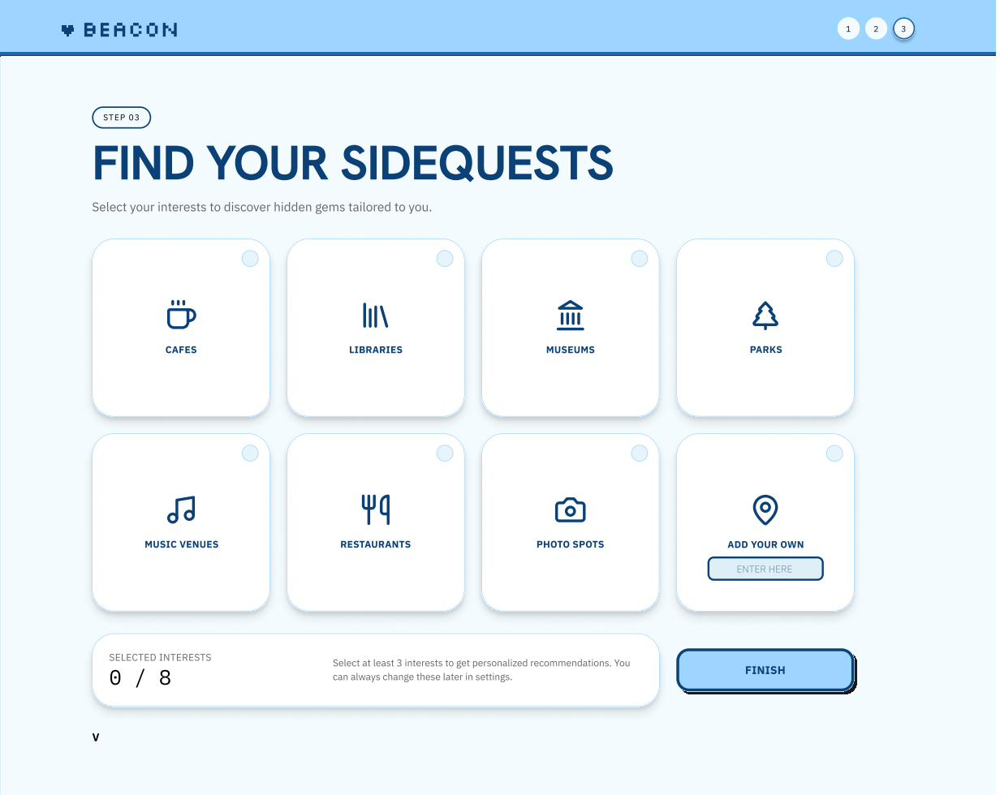
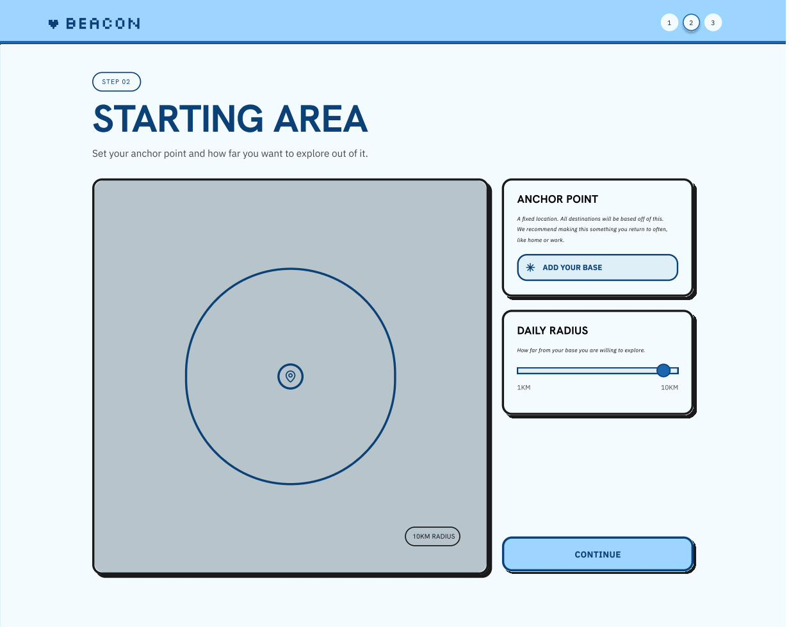
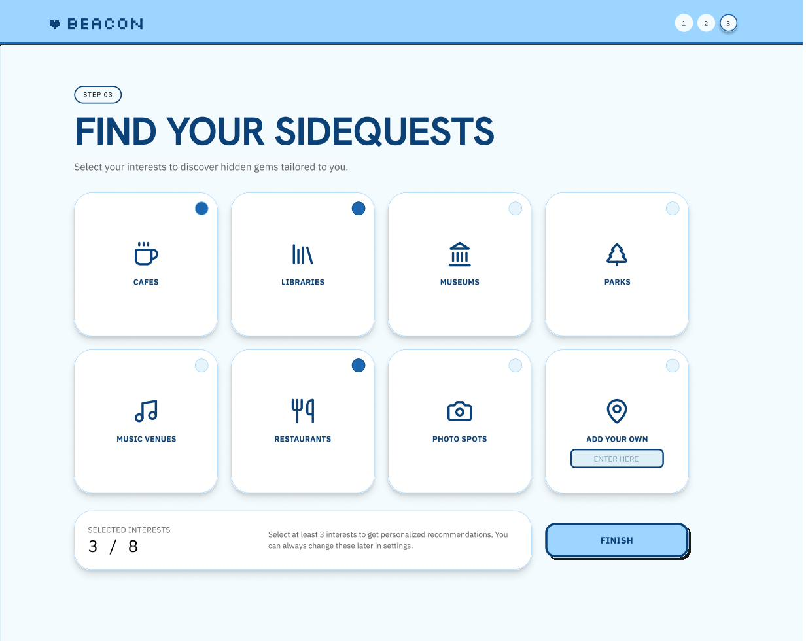

A GameBoy-style physical proximity device + companion app that helps you explore the world anchored to the places that matter to you — and discover what you've been missing right around the corner.
The Brief
The SIGCHI Design Jam challenge: design a product or service that changes how people experience physical space. In 48 hours, our team designed Beacon — a system that uses physical proximity to anchor your digital and physical world around the places you care about most.
The insight behind Beacon: most location apps tell you where to go. Beacon tells you what you're missing right where you already are. Instead of destination-first thinking, it's anchor-first: you set your home, your favorite coffee shop, your campus — and Beacon reveals what's been hiding within walking distance all along.
The Product
Beacon is a two-part system: a physical handheld device with a retro GameBoy aesthetic, and a companion mobile app for richer discovery and stats tracking.


The Beacon physical device — a tactile, playful handheld that vibrates and lights up as you approach your anchor radius.
Onboarding
Onboarding was designed to be fast and delightful — not a questionnaire. Three steps get you from unboxing to exploring:
Bluetooth pair your physical Beacon device with the companion app. Simple, one-tap pairing — no accounts required to start.
Drop a pin on your anchor location — your home, campus, favorite neighborhood. Set how far out you want Beacon to look: 0.5mi, 1mi, 2mi.
Choose interest categories — food, art, history, nature, hidden gems. These become your "sidequests": micro-adventures within your radius, served up as you move through your day.



The three onboarding screens: device setup, anchor/radius selection, and sidequest interest selection.
Core Screens


Left: the map view with anchor radius and nearby spots. Right: stats and saved spots tracking your local exploration.
The map view is the heart of the app. Your anchor is always visible, your radius is shaded, and sidequests appear as pins as you get close enough. The stats page gamifies exploration — how much of your radius have you actually discovered?
Results
Judges highlighted the dual physical/digital interaction model and the clarity of the onboarding flow as standout elements. The GameBoy form factor sparked a conversation about how product nostalgia can lower the barrier to trying new technology.
Reflection
Beacon taught me that the best product ideas often come from questioning the frame of the problem. The brief said "physical space" — most teams went straight to AR overlays or digital maps. We asked: what if the device itself was part of the experience?
Design jams also sharpen prioritization instincts. With 48 hours, every decision is a tradeoff. I learned to distinguish between features that make a product understandable (essential) and features that make it impressive (optional). Ship the understandable ones first.